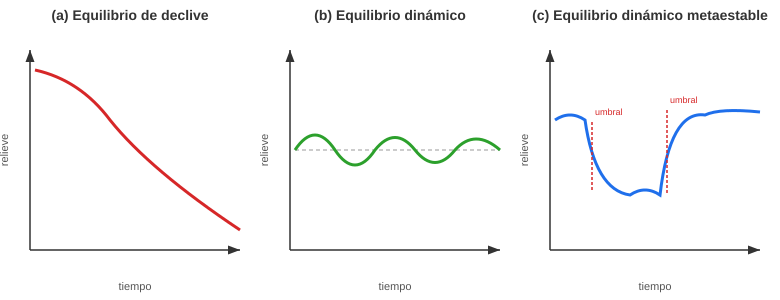

Conceptos fundamentales en Geomorfología#
En este módulo vamos a explorar las ideas centrales que nos permiten entender cómo se origina, evoluciona y se comporta el relieve terrestre. Estos conceptos son la base del pensamiento geomorfológico moderno.
Important
Objetivos de aprendizaje:
Comprender la interdependencia entre las escalas espaciales y temporales en los procesos geomorfológicos.
Diferenciar entre procesos modeladores endógenos (tectónica) y exógenos (clima).
Identificar la cuenca y el paisaje como sistemas abiertos en equilibrio dinámico.
Analizar la importancia de los umbrales y los mecanismos de retroalimentación en la evolución del relieve.
La Escala Espacial y Temporal#
Comprender los procesos y las formas del relieve geomorfológicas requiere considerar la vasta gama de escalas espaciales y temporales en las que operan. Los procesos geomorfológicos señalan una correlación positiva entre espacio y tiempo: los fenómenos de mayor extensión espacial tienden a poseer una mayor duración [Chorley, 1962].

Esta relación positiva se fundamenta en principios físicos de energía y momentum. Un proceso geomorfológico de mayor tamaño implica la movilización de una masa sustancialmente mayor, lo que a su vez requiere una cantidad de energía inicial (ya sea potencial, como en los deslizamientos, o de un forzamiento externo, como en las tormentas) de órdenes de magnitud superiores. Una vez que el proceso se desencadena, este sistema de gran masa posee una inercia y un momentum considerablemente más altos. En consecuencia, el tiempo necesario para disipar su enorme energía cinética a través de la fricción, la deformación interna y la resistencia del medio es proporcionalmente más largo. En esencia, la duración del evento no es más que el reflejo del tiempo que tarda el sistema en agotar su vasto presupuesto energético hasta alcanzar un nuevo estado de equilibrio, un proceso que se prolonga inevitablemente a medida que la escala espacial y la masa involucrada aumentan.
Procesos Modeladores del Paisaje#
El paisaje está gobernado por dos motores fundamentales: el forzamiento tectónico (endógeno), que genera el relieve primario a través de procesos como la subducción y la divergencia de placas, y el forzamiento climático (exógeno), impulsado por la radiación solar, que modula los procesos superficiales. La evolución del paisaje es el resultado emergente de una red compleja de acoplamientos y retroalimentaciones entre estos sistemas [Whipple and Tucker, 1999]. La litosfera actúa como el sustrato fundamental, mientras que las demás esferas operan sobre ella como agentes de denudación y agradación, esculpiendo las geoformas a través de una cascada de procesos interconectados.
Procesos Difusivos en Laderas. El transporte función de la pendiente se considera difusivo porque la tasa de transporte depende del gradiente topográfico (la pendiente). Los procesos de tipo difusivo tienden a reducir el relieve y a rellenar las depresiones locales.
\(q_s=kS^n\)
Procesos Advectivos en Drenajes. Los procesos en los que el área de drenaje aguas arriba influye en las tasas de transporte de sedimentos se consideran advectivos, ya que el material arrastrado generalmente se mueve con flujos que aumentan su caudal aguas abajo. Los procesos advectivos tienden a generar incisión en los valles y a crear relieve [Whipple and Tucker, 1999]:
\(q_s=kA^mS^n\)
Donde S es la pendiente local del cauce, A es el área de drenaje contribuyente que sirve como un indicador (proxy) del caudal local, K es una variable que incorpora factores dependientes del proceso de incisión, el sustrato, el clima y la hidrología, y m y n son constantes positivas que son función de la hidrología de la cuenca, la geometría del cauce y el proceso de incisión específico.
El Paisaje como un Sistema#
Para entender la complejidad del paisaje, no podemos mirar sus partes de forma aislada. Lo tratamos como un sistema abierto: un conjunto de componentes que interactúan y que intercambian energía y materia con su entorno [Chorley, 1962, Strahler, 1952].

Fig. 1 Relación entre las escalas espaciales y temporales de los procesos geológicos.#
Equilibrio, Umbrales y Retroalimentación#
Equilibrio Dinámico: Imagina un río que fluye constantemente hacia un balde que, a su vez, tiene un agujero en el fondo. Si el caudal de agua que entra es exactamente igual al caudal que sale por el agujero, el nivel del agua dentro del balde permanecerá constante. El agua está en perpetuo movimiento (dinámico), pero la forma del sistema (el nivel del agua) no cambia (equilibrio). Esta es la idea intuitiva del concepto de equilibrio dinámico en geomorfología.
Técnicamente, un paisaje se considera en equilibrio dinámico (o estado estacionario, steady-state) cuando la tasa de levantamiento tectónico (U), que añade masa y energía potencial al sistema, es igualada por la tasa de erosión o denudación (E), que remueve masa y disipa esa energía [Strahler, 1952].
\(E=KA^mS^n\)
Por lo que, \(dz/dt=U-E\):
\(\frac{dz}{dt}=U-KA^mS^n\)
Y si, \(dz/dt=0\)
\(S=k_{sn}A^{-m/n}\)
El coeficiente \(k_{sn} =(E/K)^{1/n}\) se conoce como el índice de pendiente del drenaje (channel steepness index) y el exponente θ (m/n) como el índice de concavidad (channel concavity index) [Whipple and Tucker, 1999].
No es un paisaje estático e inmutable, sino un sistema abierto con un flujo continuo de materia y energía, cuya forma se ha ajustado para que las entradas se equilibren perfectamente con las salidas. La consecuencia más importante de este concepto es que la topografía misma deja de ser una condición inicial para convertirse en una solución del sistema: la forma del paisaje es la expresión física de ese balance entre los forzamientos tectónicos y los procesos erosivos modelados por el clima.
Umbrales: un umbral geomorfológico es el límite que, una vez superado, provoca un cambio fundamental y a menudo abrupto en el estado o la dinámica de un sistema geomorfológico. Representa el punto en el que la resistencia interna del paisaje es superada por un forzamiento externo [Schumm, 1979].
La clave del concepto es la respuesta no lineal: el paisaje puede absorber tensiones de forma gradual y sin cambios aparentes (un comportamiento lineal) hasta que alcanza el umbral. Al cruzarlo, la respuesta es desproporcionadamente grande y rápida, llevando al sistema a un nuevo estado morfológico. Por ejemplo, una ladera puede soportar años de infiltración de agua (forzamiento gradual), hasta que la presión de poros alcanza un valor crítico (el umbral) y se produce un deslizamiento masivo e instantáneo (ver Geomorfología de Movimientos en Masa). El sistema pasa de un estado “estable” a uno “inestable” y luego a un nuevo estado “estable” con una morfología completamente diferente.
{kind=link}

Fig. 2 Tipos de equilibrio en geomorfología. Elaboración propia con base en Chorley [1962] (el enlace original de esta figura, alojado en ResearchGate, ya no está disponible).#
Retroalimentación (Feedback): es el mecanismo por el cual el resultado de un proceso (el output) influye de vuelta sobre el propio proceso que lo generó (el input), ya sea para amplificarlo o para atenuarlo. Es la forma en que el paisaje se auto-regula o, por el contrario, se desestabiliza y cambia drásticamente.
Negativa (Estabilizadora): Aquí, el resultado de un proceso actúa para suprimir o contrarrestar el proceso original, empujando al sistema de vuelta hacia un estado de equilibrio. Es un ciclo de auto-regulación que busca la estabilidad.
Si un tramo de un río se vuelve demasiado empinado debido a un levantamiento tectónico, la velocidad del agua aumenta. Este aumento de velocidad incrementa la tasa de erosión en ese tramo. La erosión profundiza el cauce, lo que a su vez reduce la pendiente. El sistema se ajusta a sí mismo hasta que la pendiente es la justa para transportar su carga de agua y sedimento, alcanzando un perfil de equilibrio.
Positiva (Desestabilizadora): En este caso, un cambio inicial desencadena una serie de efectos que amplifican y refuerzan ese cambio original, llevando al sistema lejos de su estado de equilibrio y promoviendo una transformación rápida.
Un pequeño surco en una ladera (un rill) concentra el flujo de agua. Esta concentración aumenta la velocidad y la capacidad erosiva del agua, lo que hace que el surco se haga más profundo. Un surco más profundo es capaz de capturar aún más agua, lo que aumenta todavía más la erosión. El proceso se auto-acelera, transformando rápidamente un pequeño surco en una cárcava.

Frecuencia vs. Magnitud#
Existe una relación inversa entre el tamaño de un evento geomorfológico y la frecuencia con la que ocurre. Wolman y Miller mostraron, además, que el mayor “trabajo geomórfico” acumulado no lo realizan los eventos catastróficos más raros, sino los eventos de magnitud moderada que se repiten con una frecuencia intermedia [Wolman and Miller, 1960].
Los eventos pequeños y de baja energía (un sismo de baja magnitud) son extremadamente frecuentes y ocurren constantemente.
Los eventos catastróficos y de alta energía (un sismo de gran magnitud) son extraordinariamente raros.

Leyes de Transporte Geomórfico#
Más allá de describir los procesos de forma cualitativa, la geomorfología moderna busca expresarlos mediante leyes de transporte geomórfico (geomorphic transport laws), ecuaciones que relacionan la tasa de movimiento de sedimento con las variables que la controlan (pendiente, área de drenaje, humedad, vegetación, etc.). Esta aproximación cuantitativa, que unifica el estudio de laderas, ríos, glaciares y costas bajo un mismo marco matemático, es uno de los aportes centrales de la geomorfología de procesos contemporánea [Bierman and Montgomery, 2013].
En este marco, la evolución de la elevación \(z\) de cualquier punto del paisaje en el tiempo se expresa mediante una ecuación de conservación de masa (ecuación de continuidad):
Donde \(U\) es la tasa de levantamiento o subsidencia tectónica y \(\nabla \cdot q_s\) es la divergencia del flujo de sedimento (la diferencia entre lo que sale y lo que entra a una celda del paisaje). Esta misma estructura matemática, con distintas formulaciones de \(q_s\), permite describir tanto el suavizado difusivo de una ladera como la incisión de un cañón fluvial [Bierman and Montgomery, 2013].
Un concepto clave de este marco es la distinción entre sistemas:
Limitados por Transporte (Transport-Limited): El suministro de sedimento suelto es abundante (por ejemplo, una ladera cubierta de regolito o suelo). La tasa de denudación está controlada por la capacidad del proceso de transporte (agua, gravedad, viento) para movilizar ese material disponible.
Limitados por Desprendimiento (Detachment-Limited): El sedimento suelto es escaso o inexistente (por ejemplo, un cauce que fluye directamente sobre roca fresca). La tasa de denudación está controlada por la capacidad del proceso para arrancar (desprender) material de un sustrato coherente, más que por su capacidad de transportarlo una vez desprendido [Bierman and Montgomery, 2013, Whipple and Tucker, 1999].
Esta distinción es crucial en los Andes colombianos: una ladera cubierta de saprolito grueso (ver Meteorización: procesos, perfiles y geoformas) suele comportarse como un sistema limitado por transporte, mientras que un cañón que incide sobre roca fresca en una zona de reciente levantamiento tectónico se comporta como un sistema limitado por desprendimiento.
Tasas de los Procesos Geomórficos#
Comprender el paisaje cuantitativamente exige comparar las velocidades a las que operan sus distintos procesos, generalmente normalizadas en milímetros por año (mm/año) o metros por millón de años (m/Ma). Estas tasas abarcan varios órdenes de magnitud, lo cual explica por qué ciertos procesos dominan el paisaje en ciertas escalas de tiempo y no en otras [Bierman and Montgomery, 2013].
Proceso |
Tasa Típica |
Escala Temporal Característica |
|---|---|---|
Reptación de suelo (soil creep) en laderas |
0.1 – 10 mm/año |
Años a décadas |
Meteorización química de silicatos (producción de regolito) |
0.01 – 0.1 mm/año |
Miles a decenas de miles de años |
Denudación de cuencas (promedio, nucleidos cosmogénicos) |
0.01 – 1 mm/año |
Cientos a miles de años (integrada) |
Incisión fluvial en zonas tectónicamente activas |
1 – 10 mm/año |
Miles a cientos de miles de años |
Levantamiento tectónico (orógenos activos, ej. Andes) |
1 – 15 mm/año |
Cientos de miles a millones de años |
Retroceso de glaciares tropicales colombianos |
Decenas a cientos de m/año (frente) |
Años a décadas |
Avenida torrencial o flujo de detritos (evento único) |
Metros por segundo (instantáneo) |
Minutos a horas |
Valores de referencia compilados a partir de Bierman and Montgomery [2013]; los órdenes de magnitud varían según litología, clima y contexto tectónico específico.
Nótese el contraste entre procesos continuos y lentos (reptación, meteorización), que operan de manera casi imperceptible pero durante periodos muy largos, y procesos episódicos y rápidos (avenidas torrenciales, deslizamientos), que logran en minutos u horas lo que tomaría siglos de denudación gradual. Este contraste es la base cuantitativa del principio de magnitud-frecuencia discutido más arriba.
Sensibilidad y Tiempo de Respuesta del Paisaje#
No todos los componentes del paisaje reaccionan con la misma velocidad ante un cambio en las condiciones externas (clima o tectónica). El concepto de tiempo de relajación (relaxation time) describe cuánto tarda un sistema geomorfológico en ajustar su forma a un nuevo estado de equilibrio después de una perturbación [Bierman and Montgomery, 2013, Schumm, 1979].
Sistemas de respuesta rápida: Un cauce fluvial de montaña puede ajustar su perfil longitudinal a un nuevo aporte de sedimentos en años a décadas.
Sistemas de respuesta lenta: La forma general de una cordillera, controlada por la interacción entre el levantamiento tectónico y la denudación regional, puede tardar millones de años en alcanzar un nuevo equilibrio dinámico tras un cambio climático o tectónico sostenido.
La sensibilidad del paisaje (landscape sensitivity) es la facilidad con la que un componente del sistema cambia ante una perturbación dada. Laderas empinadas y saturadas en los trópicos húmedos son altamente sensibles (umbrales bajos, tiempos de relajación cortos), mientras que superficies de erosión antiguas sobre cratones estables (ver Morfotectónica y geomorfología estructural) son poco sensibles, conservando su morfología durante decenas de millones de años [Bierman and Montgomery, 2013].
La Geomorfología como Disciplina: Alcance y Organización del Conocimiento#
La Encyclopedia of Geomorphology, publicada bajo el auspicio de la Asociación Internacional de Geomorfólogos (IAG) y editada por Andrew Goudie, define la geomorfología como el estudio científico de la naturaleza y el origen de las geoformas terrestres y submarinas, y de los procesos que las producen [Goudie, 2004]. Esta definición, aparentemente simple, encierra la doble tarea de la disciplina que atraviesa todo este libro: describir la forma (morfología) y explicar el proceso que la genera, dos enfoques que, como se ha visto en este capítulo, deben integrarse mediante un marco cuantitativo común.
La magnitud del campo de estudio queda ilustrada por la organización del Treatise on Geomorphology, una obra de referencia en 14 volúmenes editada por John Shroder, que sistematiza la geomorfología moderna en grandes dominios de proceso [Shroder, 2013]. Esta organización temática es, en esencia, un mapa de los capítulos de este mismo libro:
Dominio de Proceso (Treatise on Geomorphology) |
Capítulo Correspondiente en este Libro |
|---|---|
Fundamentos, Modelado Cuantitativo y Técnicas Geomorfológicas |
Conceptos fundamentales en Geomorfología, Teorías Clásicas de la Evolución de Laderas |
Geomorfología Tectónica y Estructural |
|
Geomorfología Volcánica |
|
Geomorfología Glacial y Periglacial |
|
Meteorización, Suelos y Karst |
|
Procesos de Ladera y Movimientos en Masa |
|
Geomorfología Fluvial y de Cuencas |
Geomorfología de Cuencas Hidrográficas, Geomorfología de Ambientes Fluviales, Ambientes Torrenciales |
Geomorfología Eólica y de Zonas Áridas |
|
Geomorfología Costera y Deltaica |
Delta |
Geomorfología del Cambio Climático y de las Perturbaciones Humanas |
Transversal a todos los capítulos |
Estructura temática simplificada a partir de Shroder [2013].
Esta correspondencia no es casual: refleja que la subdivisión del paisaje en “ambientes” (glacial, volcánico, eólico, fluvial, etc.) que estructura este libro es, en realidad, una subdivisión por dominio de proceso dominante, coherente con la forma en que la comunidad científica internacional organiza el conocimiento geomorfológico contemporáneo [Goudie, 2004, Shroder, 2013].
Taller de Autoevaluación#
Relación Escala-Tiempo: Explique por qué un aluvión torrencial tiene una duración menor que la evolución de una cordillera, utilizando el concepto de presupuesto energético mencionado en el texto.
Procesos Difusivos vs. Advectivos: En una ladera tropical, identifique un proceso que se comporte de forma difusiva y otro de forma advectiva. ¿Cuál de ellos tiende a generar mayor incisión sobre el terreno?
Estado Estacionario: Si en una cuenca de los Andes colombianos la tasa de levantamiento tectónico es de 1 mm/año, ¿cuál debería ser la tasa de erosión para que el paisaje se encuentre en equilibrio dinámico? ¿Qué sucedería con la pendiente del cauce si el levantamiento aumenta a 2 mm/año?
Análisis de Caso (Retroalimentación): Describa el ciclo de retroalimentación positiva que ocurre durante la formación de una cárcava en un suelo desprotegido de vegetación.
Umbrales: ¿Cómo se aplica el concepto de umbral geomorfológico al trigger o detonante de un deslizamiento de tierra durante una tormenta intensa?